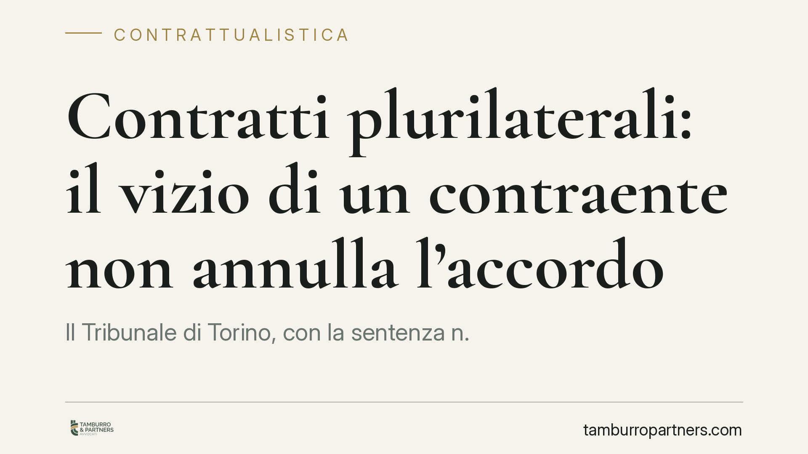

Contratti plurilaterali: il vizio di un contraente non annulla l'accordo
Il Tribunale di Torino, con la sentenza n. 3564/2026, ribadisce un principio cardine della contrattualistica plurilaterale: la nullità, l'annullabilità o l'inadempimento di un singolo contraente non travolge l'intero accordo. La regola salta solo quando la partecipazione del soggetto venuto meno era essenziale. Una precisazione che pesa su imprese, associazioni e compagini sociali.

Il caso e il principio affermato
Nei contratti con più di due parti – il codice li chiama *plurilaterali* – il legame tra i contraenti funziona diversamente rispetto ai contratti bilaterali. Qui le prestazioni convergono verso uno scopo comune: pensiamo a un contratto di società, a un accordo consortile o a una joint venture tra imprese.
Il Tribunale di Torino, Sez. III, con la sentenza n. 3564/2026, ha applicato questa logica di conservazione: il difetto che colpisce la posizione di un solo contraente resta, di regola, confinato a quella posizione. L'accordo tra gli altri partecipanti sopravvive.
Inquadramento normativo
Il perno della decisione è la disciplina speciale dei contratti plurilaterali.
L'art. 1420 c.c. stabilisce che la nullità che colpisce il vincolo di una sola parte non comporta nullità dell'intero contratto, salvo che la sua partecipazione debba considerarsi essenziale. La stessa regola si ripete, in modo simmetrico, per gli altri vizi funzionali: l'art. 1446 c.c. per l'annullabilità, l'art. 1459 c.c. per la risoluzione per inadempimento, l'art. 1466 c.c. per l'impossibilità sopravvenuta.
Il filo conduttore è il principio di conservazione del contratto, espresso in via generale dall'art. 1367 c.c. (nel dubbio, l'atto va interpretato nel senso che gli consente di produrre effetti) e dall'art. 1419 c.c. sulla nullità parziale. Resta ferma la soglia dell'art. 1455 c.c.: l'inadempimento rileva solo se non è di scarsa importanza. Sul fronte dell'annullabilità per incapacità o vizi del consenso opera poi l'art. 1428 c.c.
Il punto decisivo è sempre lo stesso: stabilire se la partecipazione del contraente venuto meno fosse *essenziale*. È una valutazione in concreto, non astratta.
Quando la partecipazione è "essenziale"
La partecipazione è essenziale quando, senza quel contraente, lo scopo comune non può più essere raggiunto o muta in modo sostanziale. Due esempi chiariscono la differenza.
- In un consorzio di più imprese costituito per realizzare un'opera, il venir meno dell'unica impresa titolare della qualifica tecnica indispensabile rende la sua partecipazione essenziale: senza di lei l'oggetto comune è irrealizzabile.
- Al contrario, in una compagine con più soggetti fungibili, ciascuno dei quali apporta un contributo sostituibile, il difetto che colpisce uno di essi non impedisce agli altri di proseguire.
L'onere di dimostrare l'essenzialità grava su chi invoca la caducazione dell'intero accordo.
Implicazioni pratiche
Per imprese, associazioni e soci la sentenza conferma un assetto favorevole alla stabilità degli accordi collettivi. Chi partecipa a un contratto plurilaterale non vede automaticamente sfumare l'operazione perché un altro contraente è incapace, inadempiente o la sua posizione è viziata.
Il rovescio della medaglia: non si può contare sul vizio altrui per liberarsi dal proprio vincolo. Se gli altri partecipanti mantengono interesse e capacità di perseguire lo scopo comune, il contratto resta in piedi anche nei confronti di chi vorrebbe uscirne.
La variabile critica è la qualificazione della partecipazione come essenziale o meno. Ed è una qualificazione che, troppo spesso, non viene regolata in fase di redazione e finisce davanti al giudice.
Cosa fare in concreto
- Mappare i contraenti essenziali già in fase di stesura: individuate quali partecipazioni sono indispensabili allo scopo comune e quali sono sostituibili.
- Inserire clausole espresse che qualifichino, dove opportuno, la partecipazione di determinati soggetti come essenziale o non essenziale, riducendo l'incertezza interpretativa.
- Prevedere meccanismi di sostituzione o subentro per i contraenti non essenziali, così da assicurare la continuità dell'operazione.
- Verificare i requisiti soggettivi (capacità, qualifiche, abilitazioni) di ciascun contraente prima della firma, per prevenire vizi che poi impongono valutazioni di essenzialità.
- Documentare lo scopo comune: un oggetto contrattuale ben definito agevola, in caso di contenzioso, la prova su cosa fosse davvero indispensabile.
Consigliamo di affrontare questi profili in sede di redazione, quando il costo di una clausola chiara è minimo rispetto a quello di una lite sulla tenuta dell'intero accordo.
Disclaimer
Contributo informativo a cura di Tamburro & Partners - Avv. Giuseppe Tamburro. Non costituisce parere legale.
Ogni contratto ha il suo equilibrio.
Se vuoi una revisione delle clausole o una redazione su misura, scrivi allo studio. Ti rispondiamo entro un giorno lavorativo.